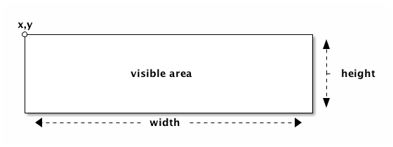
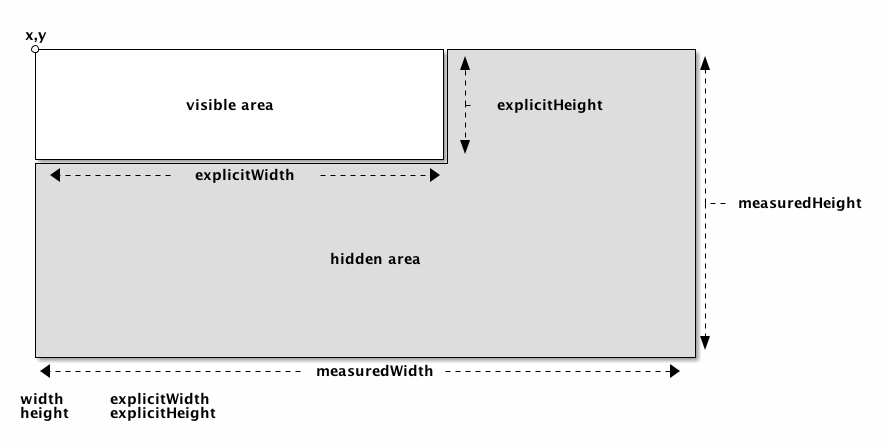
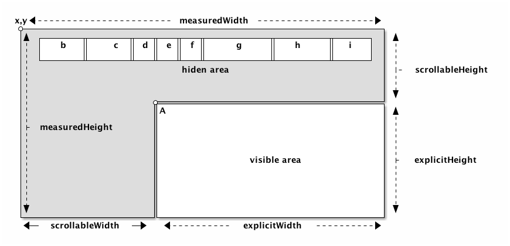

Implementation
Every UIElement has a property layout, typed as LayoutClient. A LayoutClient is the basic layout-class that defines the position, size, margin and padding of it’s UIElement.
LayoutClient

AdvancedLayoutClient

LayoutContainer

|
A
|
scrollPos(x, y) |
|
b-d
|
layoutContainer.children |
Box Model
PrimeVC implements a layout-model comparibable to the css3 box-sizing value border-box. The original css-box-model can be quite frustrating when you work with liquid layouts so we tried to fix it by only implementing the border-box model.
|
Note
|
Prime-developers: border-box is supported by all modern browsers. PrimeVC should be able to apply some automatic quirkcs for the html-implementation with support for IE6/7. |